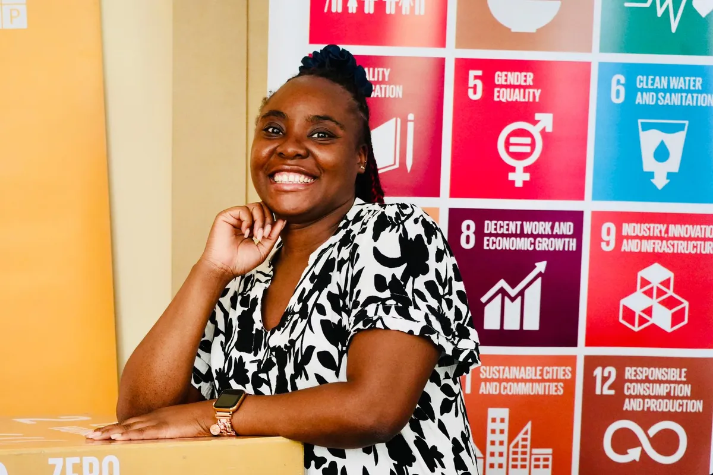

About
Communication, public information, risk communication and broadcast journalism professional with 10 years' experience across national media and the United Nations.
Seven years as a TV1 news reporter at the Zambia National Broadcasting Corporation (ZNBC), followed by UNDP Zambia roles as Risk Communication Officer for the 2024 drought response and Communications Assistant on the Community Recovery and Resilience Facility (CRRF) Project.
Skilled at turning complex development issues into clear human-interest stories, factsheets and policy briefs, in line with UN, Government and cooperating partner visibility standards.

- Based in
- Lusaka, Zambia
- Languages
- English, Lozi, Nyanja and Bemba (fluent); French and Chinese (basic)
- Focus
- Public information, risk communication, broadcast journalism
Experience
-
–
Communications Assistant, CRRF Project
UNDP Zambia, Energy and Environment Unit
Led communications and visibility for the Community Recovery and Resilience Facility (CRRF), a resilience pilot implemented by the Disaster Management and Mitigation Unit (DMMU) in eight wards of Mambwe District, Eastern Province.
- Compiled and designed the CRRF factsheet and the 10-page policy brief Gender Dynamics in Climate Resilience (2025).
- Compiled the factsheet for the Productive Uses of Electricity mini-grid project with the Ministry of Energy.
- Produced human-impact stories and social media content, and coordinated field photo and video documentation.
- Drafted briefs, key messages, talking points and monthly updates in line with UNDP and Government visibility standards.
-
–
Risk Communication Officer
UNDP Zambia, seconded to the Disaster Management and Mitigation Unit
Served as UNDP's dedicated risk communication officer to the Disaster Management and Mitigation Unit (Office of the Vice President) during the 2024 drought, which affected 84 districts.
- Compiled the factsheet UNDP's Drought Response and Interventions in Zambia, covering the risk communication, early recovery and energy clusters.
- Compiled the photo story Promoting Resilience in Zambia for the International Day for Disaster Risk Reduction 2024, documenting drought impacts in Mwandi, Namwala and Shangombo districts.
- Created a QR-linked campaign card directing audiences to UNDP's drought response content.
- Developed information, education and communication (IEC) materials for vulnerable and hard-to-reach communities, and drafted press materials and situation updates.
-
–
Assistant Communications Officer, IVAG Programme
UNDP Zambia, Ministry of Youth, Sport and Arts
Developed and implemented the communications strategy for the Internship, Volunteer, Apprenticeship and Graduates (IVAG) programme, aligned with Government priorities and the Sustainable Development Goals.
- Produced short documentaries, video interviews and success stories on youth skills, entrepreneurship and jobs.
- Led advocacy campaigns to disseminate the State of the Youth Report and National Youth Policy initiatives.
- Produced a monthly stakeholder newsletter and event communications for trainings and launches.
-
–
News Reporter, TV1 Newsroom
Zambia National Broadcasting Corporation (ZNBC)
Generated story ideas and reported from the field, including live coverage of national events, for television, radio and online.
- Conducted interviews, wrote scripts and edited audio, video clips and news packages under tight deadlines.
- Covered elections and governance, public health, sport, culture, and community and business features.
- Built trusted relationships with Government, civil society and development partners, and applied ethical journalism on sensitive stories.
-
–
Broadcaster
Parliament Radio, National Assembly of Zambia
Aired live and recorded parliamentary programmes, recorded and edited radio programmes, and managed on-air time checks.
Selected work
Publications she compiled for UNDP Zambia, and examples of her video and broadcast work.
Publications and factsheets
-
 Gender Dynamics in Climate Resilience
Gender Dynamics in Climate Resilience
Compiled and designed this 10-page policy brief on gender and climate resilience in Mambwe District.
PDF, 9.4 MB
-
 CRRF project factsheet
CRRF project factsheet
Compiled and designed the factsheet for the Community Recovery and Resilience Facility pilot in Mambwe District.
PDF, 1.4 MB
-
 Productive Uses of Electricity
Productive Uses of Electricity
Compiled the factsheet for the Productive Uses of Electricity mini-grid project with the Ministry of Energy.
PDF, 0.3 MB
-
 UNDP's Drought Response and Interventions in Zambia
UNDP's Drought Response and Interventions in Zambia
Compiled the factsheet on UNDP's risk communication, early recovery and energy work during the 2024 drought.
PDF, 3.2 MB
-
 Promoting Resilience in Zambia
Promoting Resilience in Zambia
Compiled the photo story documenting drought impacts in Mwandi, Namwala and Shangombo districts.
PDF, 6.5 MB
Video and broadcast
-
Watch video: NAP Expo 2025 opening video
NAP Expo 2025 opening video
Produced the opening video for the NAP Expo 2025, held in Lusaka.
-
Watch video: Child Health Week, Mantapala
Child Health Week, Mantapala
Reported and produced a TV1 news package on Child Health Week in Mantapala.
-
Watch video: World Malaria Day
World Malaria Day
Reported and produced a TV1 news package for World Malaria Day.
-
Watch video: Women in business
Women in business
Produced a feature on women in business for ZNBC TV1.
-
Watch video: 2016 elections, EU observers
2016 elections: EU observers
Reported and produced a TV1 news package on European Union election observers during the 2016 general elections.
Skills and tools
Expertise
Tools
Education and certifications
Education
-
Bachelor of International Relations and Development
-
Diploma in Journalism and Public Relations
Certifications
-
Certified Nursing Assistant
-
UN Volunteer certificates of service
-
UN e-learning
Contact
Get in touch about communication, public information and broadcast work.
- janetetambuyuk@gmail.com
- Phone
- +260 977 221 191
- Etambuyu Katota
References are available on request.